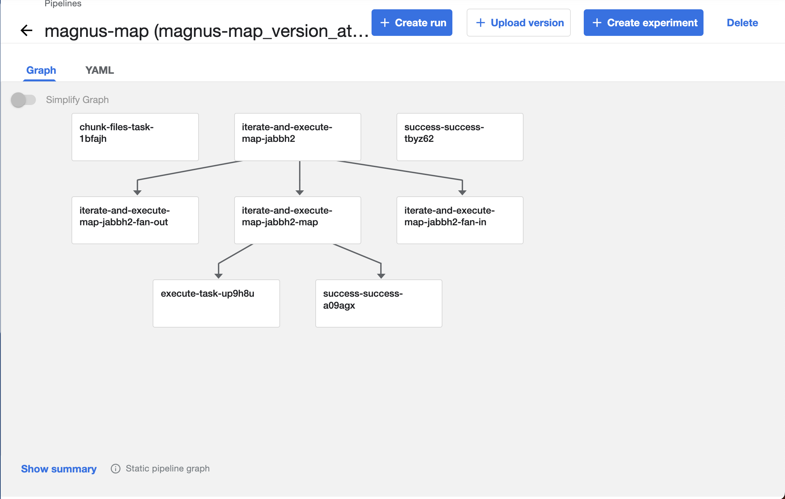
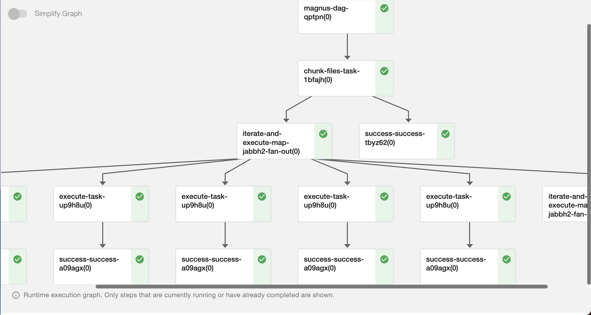

argo workflows
Argo workflows is a powerful container orchestration framework for Kubernetes and it can run on any Kubernetes environment.
runnable will transpile pipeline definition to argo specification during the pipeline execution which you can then upload to the cluster either manually or via CICD (recommended).
- Execute the pipeline in any cloud environment.
- Massively scalable.
- Ability to provide specialized compute environments for different steps of the pipeline.
- Expects a mature cloud kubernetes environment and expertise.
runnable provides sensible defaults to most of the configuration variables but it is highly advised to get inputs from infrastructure teams or ML engineers in defining the configuration.
Configuration¶
Only image is the required parameter. Please refer to the
note on containers on building images.
Defaults¶
Default values
Ensure that these default values fit your needs to avoid unexpected behavior.
| Parameter | Default | Argo Field |
|---|---|---|
| name | runnable-dag- |
generateName |
| annotations | {} |
annotations of metadata |
| labels | {} |
labels |
| pod_gc | OnPodCompletion |
podGC |
| service_account_name | None |
serviceAccountName of spec |
| secrets_from_k8s | [] |
List |
| expose_parameters_as_inputs | True | NA |
| max_workflow_duration_in_seconds | 86400 seconds = 1 day | activeDeadlineSeconds of spec |
| node_selector | {} |
nodeSelector |
| parallelism | None |
parallelism of spec |
| resources | limits: 1Gi of memory and 250m of CPU | resources of the container |
| retry_strategy | None |
retryStrategy of the spec |
| max_step_duration_in_seconds | 60 * 60 * 2 = 2 hours | activeDeadlineSeconds of container |
| tolerations | {} |
tolerations of the container |
| image_pull_policy | "" |
imagePullPolicy of the container |
| persistent_volumes | None |
''' |
Notes¶
The following parameters cannot be overridden at individual step level.¶
name: Using a name provides a logical way to organize pipelines.pod_gc: Defines the pod garbage collection strategy. Setting toOnPodCompletionwill mark the pod for garbage collection immediately after completion, either success or failure.annotations: Unstructured key value pairs that can be added to K8's resources.labels: Dictionary of labels to apply to all the objects of the workflow.service_account_name: Name of the service account to be used to run the workflow.max_workflow_duration_in_seconds: The default value is 1 day for the completion of the workflow. Kubernetes will actively try to fail the pipeline after this duration.
Volumes
As the persistent volumes are attached to the pod at specified path, it allows for file-system based
catalog or run log store to work without any modifications.
For example, /mnt folder can be used as the
parent directory for file-system run log store and catalog.
persistent_volumes: Persistent volumes from the underlying Kubernetes cluster to be assigned to the pods. You can attach multiple persistent volumes to the pods as long as there are no clashes with mount paths.
Example:¶
The following adds the volume runnable-volume to every container of the workflow at /mnt
secrets_from_k8s: List of secrets from the Kubernetes cluster to be exposed as environment variables.
Secrets
As the secrets are exposed as environment variables, the application can then be configured using
env-secrets-manager as a convenient way to access K8's secrets.
Example:¶
In the example below, the secret connection_string from postgres secret of K8's is exposed as
connection_string to the container.
secrets_from_k8s:
- environment_variable: connection_string
secret_name: postgres
secret_key: connection_string
expose_parameters_as_inputs: Expose parameters of simple python data types (str, int, float) as inputs to the workflow. This allows for changing the parameters at runtime.
Example:¶
Execute the pipeline as:
runnable execute -f examples/concepts/task_shell_parameters.yaml -p examples/concepts/parameters.yaml -c examples/configs/argo-config.yaml
The initial parameter of spam is exposed and defaulted to Hello as per the parameters file.
The run_id is also a configurable run time parameter.
1 2 3 4 5 6 7 8 9 10 11 12 13 14 15 16 17 18 19 20 21 22 23 24 25 26 27 28 29 30 31 32 33 34 35 36 37 38 39 40 41 42 43 44 45 46 47 48 49 50 51 52 53 54 55 56 57 58 59 60 61 62 63 64 65 66 67 68 69 70 71 72 73 74 75 76 77 78 79 80 81 82 83 84 85 86 87 88 89 90 91 92 93 94 95 96 97 98 99 100 101 102 103 104 105 106 107 108 109 110 111 112 113 114 115 116 117 118 119 120 121 122 123 124 125 126 127 128 129 130 131 132 133 134 135 136 137 138 139 140 141 142 143 144 145 146 147 148 149 150 151 152 153 154 155 156 157 158 159 160 | |
The step log of the first step, access initial receives the value of the parameter spam as
No-Hello from the UI submission.
The following parameters can be configured at step level using overrides:¶
- parallelism: Controls the number of parallel tasks that can happen at once. By default,
there is no limit either for
parallelormapnodes. To control the parallelism of amaporparallel, provide anoverridein the overrides section.
The parallelism constraint only applies to the step, any nested steps within the step have the default parallelism.
Example:¶
By default, there is no limit on the number of parallel tasks that can be run.
The argo config is a very basic configuration.
This example is the same as detailed in map.
From the gant chart representation of the workflow execution, we can see that all the execute_task
tasks execute simultaneously.
While the global configuration has no limit on parallelism, any task using sequential override would
run sequentially.
The pipeline defined here is nearly the same as detailed in map with the
only exception in lines 25-26 which use the sequential override.
The workflow execution from the gant chart shows the execution of execute task is sequential
instead of parallel as seen in the default.
-
node_selectorandtolerations: Gives you the ability to selectively choose a node to run your task. See more information about node selector and tolerations for more information. -
resources: Has the same structure as K8's manifest. To use a GPU, you can mention the maximum number of GPUs in
limitssection. The default value is 1Gi of memory and 250m of cpu with no GPU. To override the resources for a specific task, useoverridessection.
Example:
-
max_step_duration_in_seconds: Defines the maximum amount of time a task can take for completion. The default value is 2 hours and an additional 1 hour is given fortimeout. -
retry_strategy: Defines the strategy to retry in case of failure. The default retry policy isAlways, i.e in case of failure in execution of task or any other infrastructure failures. Please see argo workflows documentation for more information. As with other parameters, this can be overridden for individual task nodes. -
image_pull_policy: Defaults to not setting the field. This behavior does not pull the image for any tag other thanlatest
Compatibility¶
As argo workflows is a cloud based executor, not all the services are compatible with it.
-
Run log: All steps of the workflow need access to the run log as such
bufferedrun log store would not be compatible.file-systembased run log store is compatible by using volumes that are available for all the steps of the workflow, eg. persistent volumes. -
catalog: Any catalog service that is available for all the steps of the workflow is compatible.
file-systemis compatible as long as the catalog store is mounted as a volume similar to the run log store. -
secrets: It is possible to use
dotenvsecrets manager as long as the file is available during the execution of the task. We highly recommend.envfiles to be excluded from the code versioning tools. We recommend usingsecrets_from_k8sin the configuration.
Example¶
Assumed to be present at examples/configs/argo-config.yaml
The docker image is a variable and dynamically set during execution.
- Use
argoexecutor type to execute the pipeline. - By default, all the tasks are executed in the docker image . Please refer to building docker images
- Mount the persistent volume
runnable-volumeto all the containers as/mnt. - Store the run logs in the file-system. As all containers have access to
runnable-volumeas/mnt. We use that to mounted folder as run log store.
Running the SDK defined pipelines for any container based executions happens in multi-stage process.
- Generate the
yamldefinition file by:runnable_CONFIGURATION_FILE=examples/configs/argo-config.yaml python examples/concepts/simple.py - Build the docker image with yaml definition in it, called runnable:latest in current example.
- Execute the pipeline via the runnable CLI,
runnable_VAR_argo_docker_image=runnable:latest runnable execute -f runnable-pipeline.yaml -c examples/configs/argo-config.yaml
- You can provide a configuration file dynamically by using the environment
variable
runnable_CONFIGURATION_FILE. Please see SDK for more details.
For yaml based definitions, the execution order is to:
- Build the docker image with the yaml definition in it, called runnable:latest in current example.
- Execute the pipeline via the runnable CLI:
runnable_VAR_argo_docker_image=runnable:latest runnable execute -f examples/concepts/simple.yaml -c examples/configs/argo-config.yaml
The run log structure is the same as any other executor. Any failed executions in the
workflow can be executed in local by providing this run log and any catalog files.
{
"run_id": "bb96359d-74f0-4837-90e3-94aed85dbb8f",
"dag_hash": "d467805d7f743d459a6abce95bedbfc6c1ecab67",
"use_cached": false,
"tag": "",
"original_run_id": "",
"status": "SUCCESS",
"steps": {
"simple": {
"name": "simple",
"internal_name": "simple",
"status": "SUCCESS",
"step_type": "task",
"message": "",
"mock": false,
"code_identities": [
{
"code_identifier": "39cd98770cb2fd6994d8ac08ae4c5506e5ce694a",
"code_identifier_type": "git",
"code_identifier_dependable": true,
"code_identifier_url": "https://github.com/AstraZeneca/runnable-core.git",
"code_identifier_message": ""
}
],
"attempts": [
{
"attempt_number": 1,
"start_time": "2024-01-31 06:43:01.937309",
"end_time": "2024-01-31 06:43:01.940862",
"duration": "0:00:00.003553",
"status": "SUCCESS",
"message": "",
"parameters": {}
}
],
"user_defined_metrics": {},
"branches": {},
"data_catalog": []
},
"success": {
"name": "success",
"internal_name": "success",
"status": "SUCCESS",
"step_type": "success",
"message": "",
"mock": false,
"code_identities": [
{
"code_identifier": "39cd98770cb2fd6994d8ac08ae4c5506e5ce694a",
"code_identifier_type": "git",
"code_identifier_dependable": false,
"code_identifier_url": "https://github.com/AstraZeneca/runnable-core.git",
"code_identifier_message": ""
}
],
"attempts": [
{
"attempt_number": 1,
"start_time": "2024-01-31 06:43:26.537710",
"end_time": "2024-01-31 06:43:26.544461",
"duration": "0:00:00.006751",
"status": "SUCCESS",
"message": "",
"parameters": {}
}
],
"user_defined_metrics": {},
"branches": {},
"data_catalog": []
}
},
"parameters": {},
"run_config": {
"executor": {
"service_name": "argo",
"service_type": "executor",
"enable_parallel": false,
"overrides": {},
"image": "$argo_docker_image",
"expose_parameters_as_inputs": true,
"output_file": "argo-pipeline.yaml",
"name": "runnable-dag-",
"annotations": {},
"labels": {},
"namespace": null,
"activeDeadlineSeconds": 172800,
"nodeSelector": null,
"parallelism": null,
"branch_parallelism": 0,
"retryStrategy": {
"limit": "0",
"retryPolicy": "Always",
"backoff": {
"duration": "120",
"factor": 2,
"maxDuration": "3600"
}
},
"max_step_duration_in_seconds": 7200,
"tolerations": null,
"image_pull_policy": "",
"service_account_name": null,
"secrets_from_k8s": [],
"persistent_volumes": [
{
"name": "runnable-volume",
"mount_path": "/mnt"
}
],
"step_timeout": 14400
},
"run_log_store": {
"service_name": "file-system",
"service_type": "run_log_store",
"log_folder": "/mnt/run_log_store"
},
"secrets_handler": {
"service_name": "do-nothing",
"service_type": "secrets"
},
"catalog_handler": {
"service_name": "do-nothing",
"service_type": "catalog"
},
"experiment_tracker": {
"service_name": "do-nothing",
"service_type": "experiment_tracker"
},
"pipeline_file": "examples/concepts/simple.yaml",
"parameters_file": null,
"configuration_file": "examples/configs/argo-config.yaml",
"tag": "",
"run_id": "bb96359d-74f0-4837-90e3-94aed85dbb8f",
"variables": {},
"use_cached": false,
"original_run_id": "",
"dag": {
"start_at": "simple",
"name": "",
"description": null,
"steps": {
"simple": {
"type": "task",
"name": "simple",
"next": "success",
"on_failure": "",
"overrides": {},
"catalog": null,
"max_attempts": 1,
"command": "examples.concepts.simple.simple_function",
"command_type": "python",
"node_name": "simple"
},
"success": {
"type": "success",
"name": "success"
},
"fail": {
"type": "fail",
"name": "fail"
}
}
},
"dag_hash": "d467805d7f743d459a6abce95bedbfc6c1ecab67",
"execution_plan": "chained"
}
}
Nesting¶
runnable compiled argo workflows support deeply nested workflows.
Example¶
This is the same example as shown in nested.
Assumed to be present at examples/configs/argo-config.yaml
The docker image is a variable and dynamically set during execution.
- Use
argoexecutor type to execute the pipeline. - By default, all the tasks are executed in the docker image . Please refer to building docker images
- Mount the persistent volume
runnable-volumeto all the containers as/mnt. - Store the run logs in the file-system. As all containers have access to
runnable-volumeas/mnt. We use that to mounted folder as run log store.
1 2 3 4 5 6 7 8 9 10 11 12 13 14 15 16 17 18 19 20 21 22 23 24 25 26 27 28 29 30 31 32 33 34 35 36 37 38 39 40 41 42 43 44 45 46 47 48 49 50 51 52 53 54 55 56 57 58 59 60 61 62 63 64 65 66 67 68 69 70 71 72 73 74 75 76 77 78 79 80 81 82 83 84 85 86 87 88 89 90 91 92 93 94 95 96 97 98 99 100 101 102 103 104 105 106 107 108 109 110 111 112 113 114 115 116 117 118 119 120 121 122 123 124 125 126 127 128 129 130 131 132 133 134 135 136 137 138 139 140 141 142 143 144 145 146 147 148 149 150 151 152 153 154 155 156 157 158 159 160 161 162 163 164 165 166 167 168 169 170 171 172 173 174 175 176 177 178 179 180 181 182 183 184 185 186 187 188 189 190 191 192 193 194 195 196 197 198 199 200 201 202 203 204 205 206 207 208 209 210 211 212 213 214 215 216 217 218 219 220 221 222 223 224 225 226 227 228 229 230 231 232 233 234 235 236 237 238 239 240 241 242 243 244 245 246 247 248 249 250 251 252 253 254 255 256 257 258 259 260 261 262 263 264 265 266 267 268 269 270 271 272 273 274 275 276 277 278 279 280 281 282 283 284 285 286 287 288 289 290 291 292 293 294 295 296 297 298 299 300 301 302 303 304 305 306 307 308 309 310 311 312 313 314 315 316 317 318 319 320 321 322 323 324 325 326 327 328 329 330 331 332 333 334 335 336 337 338 339 340 341 342 343 344 345 346 347 348 349 350 351 352 353 354 355 356 357 358 359 360 361 362 363 364 365 366 367 368 369 370 371 372 373 374 375 376 377 378 379 380 381 382 383 384 385 386 387 388 389 390 391 392 393 394 395 396 397 398 399 400 401 402 403 404 405 406 407 408 409 410 411 412 413 414 415 416 417 418 419 420 421 422 423 424 425 426 427 428 429 430 431 432 433 434 435 436 437 438 439 440 441 442 443 444 445 446 447 448 449 450 451 452 453 454 455 456 457 458 459 460 461 462 463 464 465 466 467 468 469 470 471 472 473 474 475 476 477 478 479 480 481 482 483 484 485 486 487 488 489 490 491 492 493 494 495 496 497 498 499 500 501 502 503 504 505 506 507 508 509 510 511 512 513 514 515 516 517 518 519 520 521 522 523 524 525 526 527 528 529 530 531 532 533 534 535 536 537 538 539 540 541 542 543 544 545 546 547 548 549 550 551 552 553 554 555 556 557 558 559 560 561 562 563 564 565 566 567 568 569 570 571 572 573 574 575 576 577 578 579 580 581 582 583 584 585 586 587 588 589 590 591 592 593 594 595 596 597 598 599 600 601 602 603 604 605 606 607 608 609 610 611 612 613 614 615 616 617 618 619 620 621 622 623 624 625 626 627 628 629 630 631 632 633 634 635 636 637 638 639 640 641 642 643 644 645 646 647 648 649 650 651 652 653 654 655 656 657 658 659 660 661 662 663 664 665 666 667 668 669 670 671 672 673 674 675 676 677 678 679 680 681 682 683 684 685 686 687 688 689 690 691 692 693 694 695 696 697 698 699 700 701 702 703 704 705 706 707 708 709 710 711 712 713 714 715 716 717 718 719 720 721 722 723 724 725 726 727 728 729 730 731 732 733 734 735 736 737 738 739 740 741 742 743 744 745 746 747 748 749 750 751 752 753 754 755 756 757 758 759 760 761 762 763 764 765 766 767 768 769 770 771 772 773 774 775 776 777 778 779 780 781 782 783 784 785 786 787 788 789 790 791 792 793 794 795 796 797 798 799 800 801 802 803 804 | |
Kubeflow¶
Kubeflow pipelines compiles workflows defined in SDK to Argo workflows and thereby has support for uploading argo workflows. Below is a screenshot of the map pipeline uploaded to Kubeflow.

